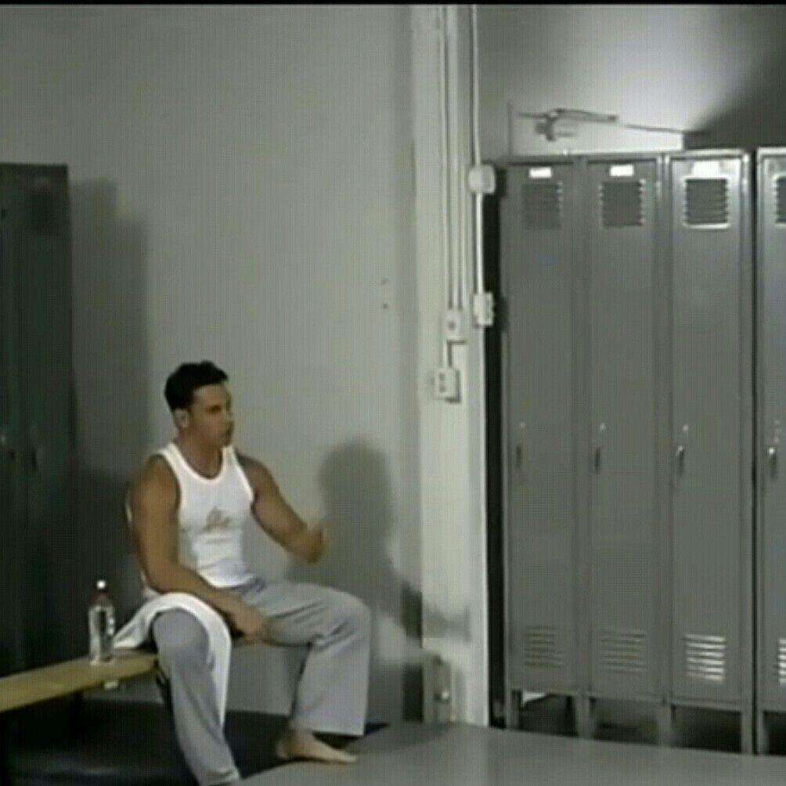

Y_z00Blog
文章
SimpleMeters项目的重构方向和自我审视.html （Tue Jul 14 2026 04:46:11 GMT+0000 (Coordinated Universal Time)）
hellomyblog.html （Tue Jul 14 2026 04:46:08 GMT+0000 (Coordinated Universal Time)）
项目
关于Y_z00

- Y_z00
- 2025年高中毕业，同样2025年开始coding，现在是中北大学能源与动力工程2025级本科生
- Y_z00经历
- 从2020年开始，我就尝试使用fl studio制作音乐，音乐给我带来的影响是巨大的，如今我写的项目还有灵感有很大程度上都和音乐有关。
那时候我非常喜爱melodic house(一种音乐风格)，所以在2020年到2021年间，我写了很多这种风格的音乐，尽管当时存在疫情，
但初中的我仍然因不用上学而有充足的时间写音乐而感到快乐，因此这两年我有很多回忆
-
在2022年，因为那一年我上高中了，离家和对未来的恐惧始终在那年的暑假笼罩着我，也因此我几乎销声匿迹了3年。
我几乎失去了所有的一切，音乐，同伴，coding，仿佛一切都不属于我，不过3年之期已到
-
上大学后的第一个学期，我主要使用html css javascript进行网站的开发，第一次开发总是陌生的，因此我需要未来的我进行重构。
第二个学期我主要使用c++开发音频仪表，也就是在写这段话的时候。开发音频仪表的过程中需要学习的东西有很多，比如说线程安全，
内存安全，实时安全，插值，边沿触发，特征处理，指数移动平均，juce框架开发，设计结构，高等数学，线性代数
- 联系Y_z00
- 通过ZTXD64
- 在此非常感谢你阅读我的介绍